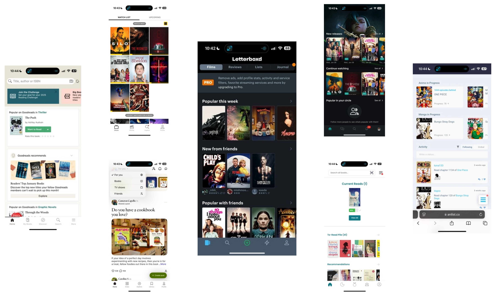

Creating a seamless social experience for logging books, movies, and TV.
UX Design / 2024 / DePaul HCI 553

Why Chronicle?
Existing social tracking apps can be too media-specific, restrict discussion, and often do not balance community and tracking features equally.
While doing a deep dive into existing social tracking apps for HCI 553, I discovered that most tools:
- Cater to specific niches (i.e. only movies; movies and TV; only TV; TV and books; only books; specifically only anime and manga).
- Often gate discussions to specific chapters or episodes; one alternative is Reddit threads, but those can be outdated or hard to find.
- Place unequal emphasis on "social" vs "tracking" aspects. While they may have some community features, they're greatly overshadowed by the tracking features, or vice versa.
This is where Chronicle comes in! I sought to create a streamlined application that consolidates as many forms of media as possible, while still emphasising community.
Creating and refining key features.
I created low-fidelity wireframes based on a contextual inquiry. Then, I conducted a round of user interviews to understand what users liked so far and what could be improved. The main findings and changes are shown below.
Confusing progress section for media pages.
- ✽ Aggregate of users' own reviews
- ✽ Clicking any chapter opens a thread with both self and community threads
- ✽ Additional media statistics/information, including custom user-added tags
Personalisation for shelf displays.
- ✽ Implement sorting and filtering
- ✽ Include default tabs to provide an organisational foundation and to help support pre-release discussions for upcoming content
More profile decoration and customisation options.

- ✽ Allow users to link external social media accounts
- ✽ Display recent user activity
- ✽ Allow users to reorder sections, and toggle them on and off
The final product.
I did another round of testing before creating the following high-fidelity prototype.
Meet Chronicle.
The onboarding is brief and requires a minimal amount of information from users; just enough to keep their accounts secure and enable public forum participation.
Grow your community.
Users will be able to engage in public conversations by viewing and making posts, even outside of specific media pages.

Stay organised and up-to-date.
Users will be able to collect and save media, search for content, and be provided with recommendations for each type of media based on previously logged/collected content, as well as trending and popular media.

Track your media precisely.
Media detail pages will highlight users’ upcoming chapters/episodes and community reviews. Users will be able to add emotions, tags, and their own reviews/comments and images when logging content.

Personalise your profile.
Users will be able to customise their profiles by reordering and showing/hiding profile sections.

What did I learn?
✽ It's important to give users opportunities for personalisation and allow them to adequately customise their experience with your product!
What's next?
✽ This project was primarily focused on incorporating various social features into an application, and as such, was realtively light on the research; conducting more usability tests, especially for the IA would be beneficial for better exploring any successes and failures.
✽ Since I wanted to make something that would simplify the existing process for its users, I would also love to try a diary study at some point.